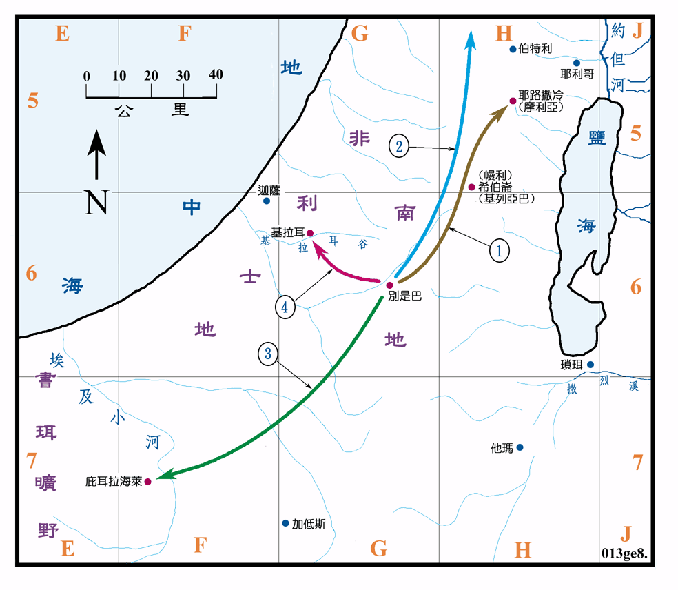

2066～1886BC

行动线说明
| 序号 | 圣经 | 说明 |
|---|---|---|
| 创21:2-4 | 以撒出生(2066BC)。 | |
| 1 | 创22:1-20 | 神试验亚伯拉罕，要他带以撒到摩利亚去，献以撒为燔祭。 |
| 2 | 创24章 | 他的父亲遣仆人往拿鹤的城去为他娶回利百加为妻。(参看创图04) |
| 3 | 创25:11 | 以撒迁往庇耳拉海莱的附近居住。 |
| 创25:24-26 | 生以扫和雅各 (2006BC)。 | |
| 4 | 创26章 | 以撒去基拉耳，耶和华使他昌大，与非利士人有冲突后又结盟。 |
| 创35:28 | 以撒在希伯仑去世 (1886BC180 岁)。 |
以撒的活动范围有限，仅是在希伯仑以南的南地，以及其西之非利士地的基拉耳地区，也曾有一次被他的父亲亚伯拉罕带去摩利亚地，可能就是耶路撒冷。他的妻子利百加，则是远从巴旦亚兰所娶来。